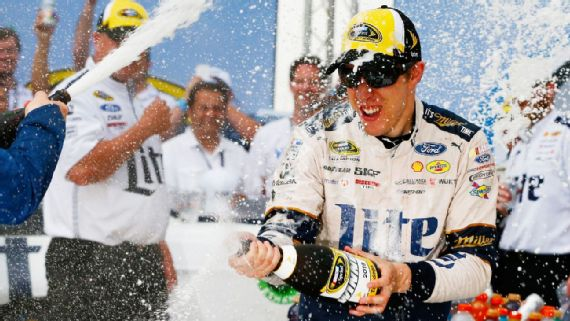

Thrill show just part of the game at Talladega
Posted On April 30th, 2016
TALLADEGA, Ala. -- In case you're ever wondering precisely how fine the line is that divides awesomeness from awful, it's a quarter of an inch.
That's the thickness of a NASCAR restrictor plate, the rather boring-looking square of metal that is placed atop Sprint Cup Series engines when racing at Daytona and at Talladega, where the series raced on Sunday afternoon. It chokes those powerplants to keep speeds down and the resulting common horsepower ceiling produces a parity that creates packs that produces edge-of-the-seat racing.
It is made of metal. It isn't flexible. Yet on Sunday, the line that it represents was bent back and forth between the thrill of watching incredible racing and the chill of watching a Joie Chitwood Thrill Show.
Lap after lap, a 190 mph parking lot of 30-plus racecars raced flawlessly.
The "Big One" didn't come until there were 28 laps remaining. But man, was it big. And it ended up being the first of three Big Ones, including the calamity that followed winner Brad Keselowski to the finish line.
During all of the above, the car of rookie Chris Buescher barrel rolled like Ricky Bobby in "Talladega Nights." Matt Kenseth, who'd led 39 laps, flipped onto his roof and rode the inside retaining wall like a skateboarder, and Kevin Harvick did the same, albeit roof-up, as he approached the checkered flag behind winner Keselowski.
In all, 35 of the 40 cars in Sunday's race ended up wrecked.
Standing in the garage as those cars were towed in, I reached back into my admittedly rusty memory banks. I wondered aloud if, after covering nearly 50 restrictor-plate races, I had ever seen this many cars damaged this badly? Team owner Richard Childress, who has been coming to Talladega since its opening weekend in 1969, answered my question. No, I had not.
"In 1972 or '73, we raced something like 60 cars here," he recalled. "That looked about like this."
As Danica Patrick's crew did a CSI breakdown of her car with former driver-turned-NASCAR safety manager David Green, Paul Menard's crew laughed about all of the grass and dirt that fell out of the ruins of his Chevy. Meanwhile, a member of Harvick's team frantically uploaded data into a laptop as a teammate shouted, "Hurry up so we can haul this piece of s--- off to the dump!"
It was exhilarating. It was exciting. It was a nice prelude to the coming summer slate of Hollywood action blockbusters. Did I enjoy it all? Yes. Do I feel guilty about that? Yes. "We don't like to be a part of crashes. It's not what our job is, to crash," said Austin Dillon, who drove a car into third place that was covered with more duct tape than the plumbing at your grandma's house. Last July, the grandson of Childress sailed airborne into the fence at Daytona's start-finish line as the field took the checkered flag, walking away from the fence-shredding fireball and becoming a bit of a YouTube sensation. "Our job is to compete and have fun and put on a show," Dillon said. "Putting on a show, in that crashes happen, I don't think of it that way. I think people, if they're cheering for crashes, man, it's not a good thing."
The allure of plate racing doesn't exist in the crashes. It exists in the constant risk of those crashes. It's watching the Wallendas walk tight ropes over waterfalls or Gunther Gebel-Williams dance around in a cage full of lions. When a foot slips or a big cat roars, it gives the audience that watch-through-your-fingers red rush feeling in their spine. But they also know the numbers going in. The last Wallenda died from a fall in 1978. Williams was killed by a tumor, not a lion.
Thankfully, we are watching NASCAR during an era of unprecedented safety in NASCAR.
The crashes we witnessed Sunday would have likely killed drivers a decade and a half ago. But Danica Patrick's brutal backstretch hit, the one that left her grabbing her knees and searching for a breath, was softened by SAFER "soft wall" barriers. Buescher and Kenseth's necks and spines were kept intact by vastly improved race seats and head and neck restraints.
When they all dropped their window nets post-accident and signaled to safety crews and their team that they were OK, we weren't really surprised. We would have been surprised if they hadn't. When I started covering motorsports more than 20 years ago, the expectation was the reverse. Maybe that's why I sat in the media center on Sunday evening grappling with my feelings about the race I had just watched and the carnage -- made up only of cars -- I'd watched loaded up into the team haulers for home. How far can this show be pushed? Because, don't get me wrong, it's a helluva show. I just don't know if we're going to like how it ends.
But that doesn't mean I'm going to stop watching. And at least I know I'm not alone. "I'm a capitalist. I love capitalism," Keselowski, one of the five drivers with clean cars, said during his winner's press conference. "There's still people paying to sit in the stands, sponsors still on the cars, drivers still willing to get in them. "Sounds self-policing and enough interest to keep going, so we'll keep going."